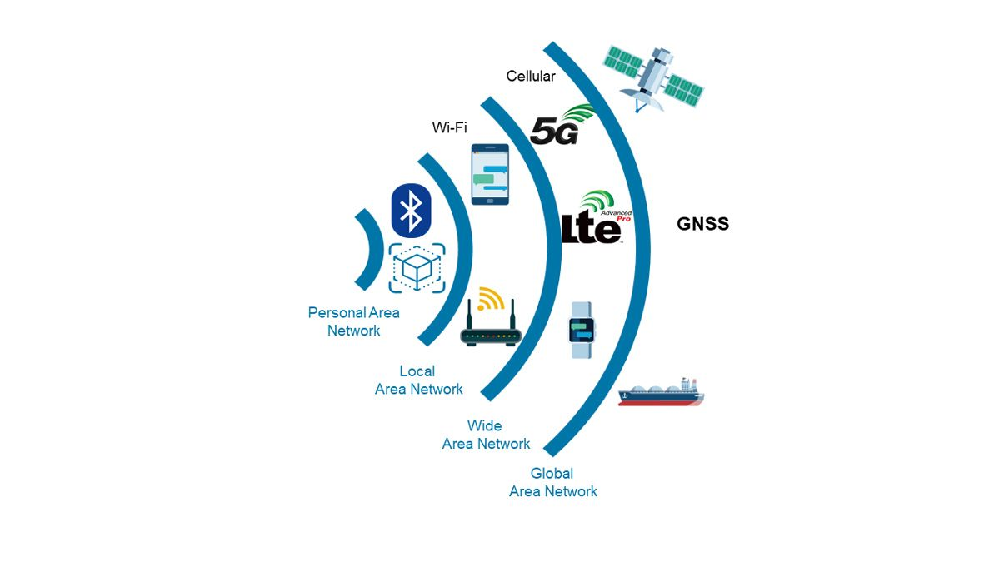
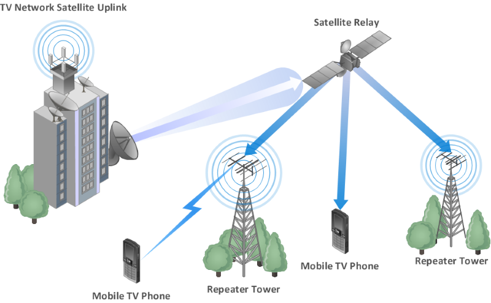

| application | standard | memo |
|---|---|---|
| WiMAX | IEEE 802.16 | Worldwide Interoperability for Microwave Access
已基本淘汰 |
| application | standard | memo |
|---|---|---|
| Wi-Fi | IEEE 802.11 |
| application | standard | memo |
|---|---|---|
| Bluetooth | IEEE 802.15.1 | |
| Zigbee | IEEE 802.15.4 | 低速无线个域网 LR-WPAN
物联网 IoT(Internet of Things) 智能家居 |
WMAN（如WiMAX）因4G/5G普及已大幅衰退
WLAN和WPAN在物联网和消费电子中持续扩展
WWAN成为广域移动通信的绝对主流